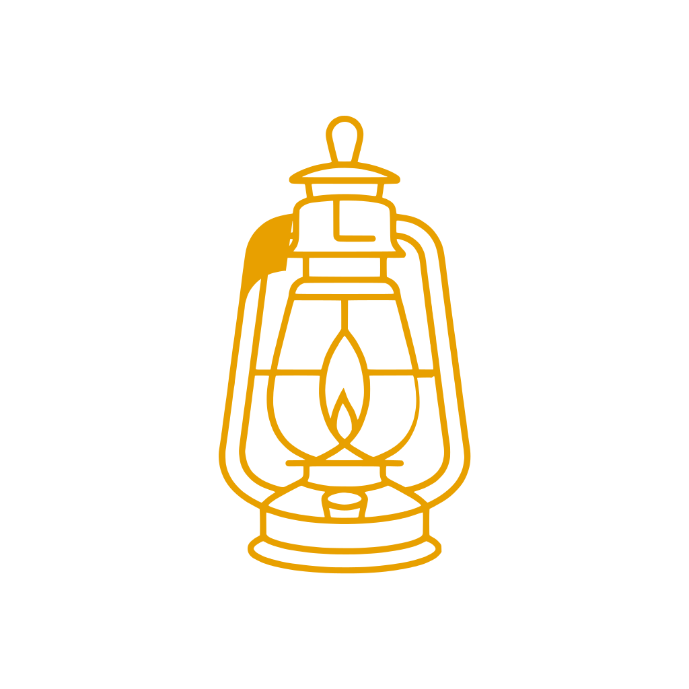

Lantern Watch is a plug-in guardian for your home internet. Content filtering, parental controls, and screen-time limits — running entirely on your own router. Free and open-source, with no cloud account: Lantern Watch has no servers and never sees your browsing.
Lantern Watch runs on affordable GL.iNet routers and pairs with AdGuard Home as its DNS filtering engine — adding per-device schedules, a parent-friendly dashboard, and private alerts on top of open-source tools trusted worldwide.
Everything runs locally on a small router you own. Your logs and dashboard stay there — Lantern Watch has no servers to send them to.
Blocks adult content, malware, and trackers at the DNS level for every device on the network — no app to install on each phone.
A blocked site doesn't end at "no." The block page — and every content alert — points to a curated page of recovery and support resources, because part of the mission is helping those who are struggling find a way out.
Set bedtimes, focus hours, and daily limits. Pause the internet for any device with one tap when it's time for dinner.
See every device on your network and manage each one individually — kids' tablets, the family TV, guest phones.
Optional notifications to a parent's phone when something needs attention — delivered privately, never to a public feed.
No accounts, no logins, no data harvesting. Lantern Watch has no servers that see your activity — the only things it sends out are an anonymous install count and a check for updates.
Every line of code is public on GitHub. Anyone can inspect exactly what it does — and improve it. Nothing hidden.
A small router sits in front of your home network. Plug it in, and every device is protected automatically.
Connect a Lantern Watch router between your internet and your existing network. No rewiring, no technical setup.
A simple first-run wizard walks you through your password, filtering level, and schedules — in plain language.
Every device on your network is now filtered and managed from one friendly dashboard. That's it.
A full walkthrough, a network-monitoring overview, and a Lite install on the travel-sized Beryl 7.
Lantern Watch runs on GL.iNet routers — compact, affordable, and OpenWrt-based. We highly recommend 1 GB+ RAM (Flint 2 or Brume 3) for the full on-device filtering experience; 512 MB travel routers like the Beryl 7 run a lighter Lite profile — every parental feature, with adult/malware filtering handled by a fast DNS upstream to stay light. (Amazon links help support the project at no extra cost to you.)
Our recommended router for almost everyone. Fast, reliable, lots of room to grow, and fully tested with Lantern Watch.
Compact travel router with excellent performance. Great when portability matters — travel, RVs, apartments, or anyone who wants something ultra-portable.
For businesses that already have commercial Wi-Fi or firewall equipment and want Lantern Watch on a dedicated appliance.
Already have a GL.iNet or OpenWrt router? Install Lantern Watch yourself — it's free and open source.
Install from GitHubOn a supported GL.iNet router you install Lantern Watch right from the router's own admin panel — no command line, and AdGuard turns itself on.
In the GL.iNet panel: Applications → Plug-ins → Manage Sources. Add
Name lanternwatch
URL https://lanternwatch.org/repo
then Apply.
Click Refresh, search lanternwatch, and click Install. Give it about two minutes.
Open http://192.168.8.1:8081 and choose a password. That's it — protection is already on.
Prefer SSH or installing from source? Full instructions are on GitHub.
Install guide on GitHubLantern Watch is built to run around the clock without expensive equipment. Even while filtering, logging, and watching over every device, it uses only a small slice of your router — leaving plenty of room for what's next.
Lantern Watch sizes itself to your router. On a 1 GB router it runs the full local blocklists in about 85 MB of RAM at under 2% processor use. On a 512 MB travel router it switches to a Lite profile — moving adult & malware filtering to a fast Cloudflare for Families DNS upstream so AdGuard Home stays tiny (~36 MB) and the router keeps roughly 100 MB free. No crashes, responsive DNS, room to spare either way.
Uses minimal processor and memory, so your router stays fast and responsive for everyone.
Designed to run continuously, 24/7, with a tiny and steady resource footprint.
Comfortable today, with headroom for larger blocklists, more devices, and future Lantern Watch features.
No enterprise gear required — it runs beautifully on recommended GL.iNet routers under $200 CAD.
Lantern Watch is 100% open source under the MIT license. Inspect it, run it, improve it. Developers and testers are warmly welcome.
Lantern Watch is free and open source — no access request needed. Just install it (or grab it on GitHub). Got a question, an idea, or hit a snag? Drop us a note.

Lantern Watch is free for everyone — families, churches, camps, and organizations — forever. No subscriptions, no licenses, no catch. If it's protecting your family, consider leaving a tip to help put a router in a home that can't afford one. 100% of tips go toward putting fully-loaded routers into homes that need them and supporting continued development.
☕ Buy me a coffeeNo pressure — the software stays free either way.
Lantern Watch is built on top of AdGuard Home, which handles the actual DNS blocking. Lantern Watch adds the parental-control layer on top — schedules, screen time, dashboards, and alerts — and runs on GL.iNet hardware.